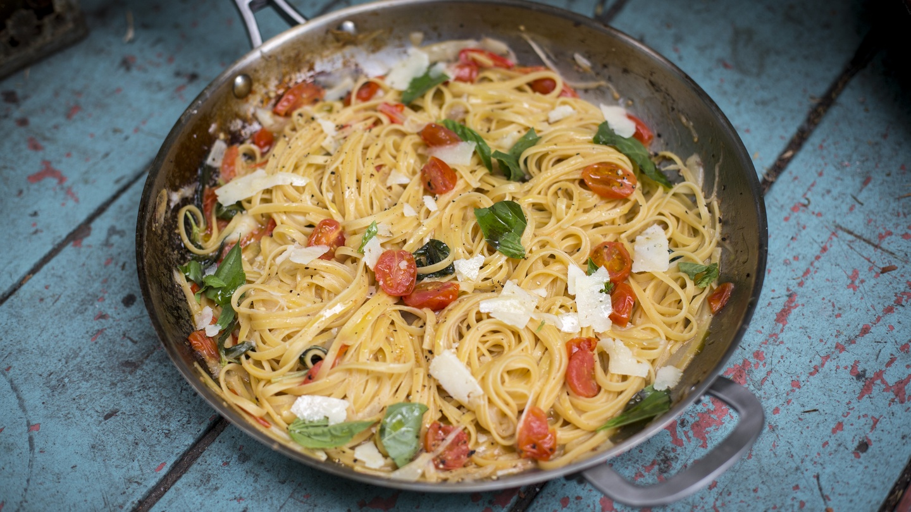

My own One Pan Pasta recipe
Return to hompage

Description
Delicious and simple recipe in 15mins for 4 servings!
Ingredients:
- one packet of pasta
- salt and pepper
- one diced clove of garlic
- two diced tomatoes
- one slice of lemon
- 200g of diced chicken or prawns
- olive oil
Steps:
- Pour generous amount of olive oil on medium heat, sauteed garlic till golden brown
- Put in tomatoes and season with salt and pepper, cook for 2mins
- Pour 1 litre of boiling water in the same pot and cook pasta for 8mins
- Once pasta is cooked, put the meat of your choice in and stir fry it until cooked
- Squeeze the lemon for the final touch and season salt and pepper as required